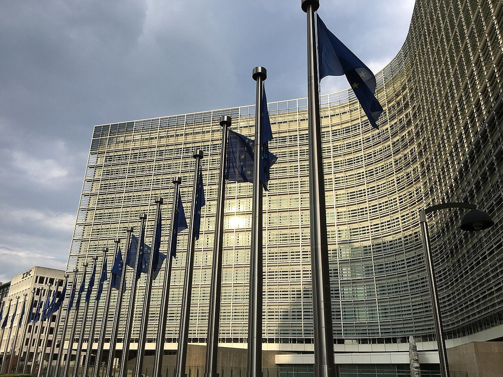
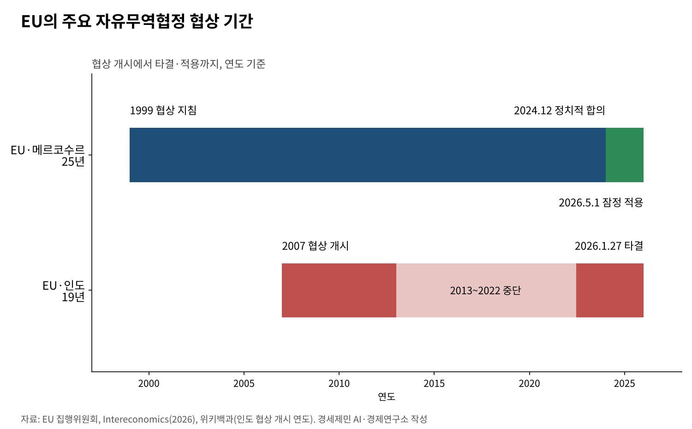
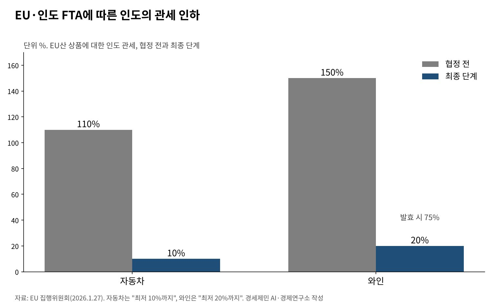

[트럼프 관세전쟁⑩] EU, 메르코수르 잠정 적용에 인도 서명 절차까지… 미국 관세 밖에 짜는 자유무역망
EU·메르코수르 잠정무역협정 5월 1일 적용, 유럽의회는 사법재판소에 의견 요청
EU·인도 FTA 1월 27일 타결, 집행위는 9월 서명·체결안을 이사회에 넘겨
멕시코 협정 7월 체결 승인, 호주와 3월 타결… 미국 301조 관세 아래 수출선 넓혀
AI경세제민=김갑봉 기자 | 유럽연합(EU)이 미국 관세의 바깥에 자유무역망을 넓히고 있다. 25년을 끌던 남미공동시장(메르코수르)과의 협정은 5월 1일 잠정 적용에 들어갔다. 인도와는 1월 27일 협상을 타결했다.
멕시코와는 개정 무역협정의 체결 절차를 7월에 마쳤고 호주와는 3월 협상을 끝냈다. 같은 기간 미국은 EU산 상품에 무역법 301조로 기본관세 포함 10%를 매겼다.
오래 막혀 있던 협상이 왜 지금 풀렸는가. 그리고 그 협정은 실제로 어디까지 왔는가. EU 집행위원회와 이사회, 인도 정부 원문으로 따라가고 한국에 주는 뜻을 짚는다.

미국의 관세, 흔들린 대서양 신뢰
미국과 EU는 지난해 8월 21일 공동성명으로 대부분 EU산 상품의 관세를 15%로 묶었다. 연방대법원이 2월 상호관세를 무효로 하자 미국은 7월 24일 301조 관세로 바꿨다. EU에는 합쳐서 10%다.
그 사이 신뢰는 여러 번 흔들렸다. 트럼프 대통령은 1월 17일 그린란드 문제를 들어 유럽 8개국에 2월 1일부터 10%, 6월 1일부터 25% 관세를 매기겠다고 했다.
1월 21일 다보스에서 마르크 뤼터 북대서양조약기구(NATO) 사무총장을 만난 뒤 그는 미래 합의의 틀을 만들었다며 이 관세를 접었다. 관세가 영토 문제의 지렛대로까지 쓰인 셈이다.
7월 23일에는 제이미슨 그리어 무역대표가 성명을 냈다. EU의 구글 과징금과 디지털시장법 집행이 미·EU 무역합의에 불확실성을 키운다는 내용이다. 무역과 디지털 규제가 한 협상판에 올랐다.
메르코수르, 25년 만에 잠정 적용
EU 이사회가 메르코수르와의 협상 지침을 정한 것은 1999년이다. 2024년 12월 정치적 합의에 이르렀다. 이사회는 1월 9일 21개국 찬성, 5개국 반대로 서명을 승인했다. 벨기에는 기권했다.
반대한 나라는 프랑스·오스트리아·헝가리·아일랜드·폴란드다. 농업국의 반대가 끝까지 남았다. 서명식은 1월 17일 파라과이 아순시온 중앙은행에서 열렸다.
유럽의회는 1월 21일 찬성 334, 반대 324, 기권 11로 이 협정이 EU 조약에 맞는지 EU 사법재판소에 의견을 묻기로 했다. 법원 의견이 나올 때까지 의회의 동의 절차는 멈춘다.
집행위원회는 의회 동의를 기다리지 않고 무역 부분만 담은 잠정무역협정을 먼저 적용하기로 했다. 아르헨티나·우루과이·브라질이 2~3월 비준했고 협정은 5월 1일부터 잠정 적용된다.
메르코수르는 EU산 수입품의 91%에서 관세를 없앤다. 민감 품목은 최대 15년에 걸쳐 내린다. EU의 대메르코수르 상품 수출은 2024년 570억유로, EU의 현지 투자 잔액은 2023년 3900억유로다.

인도, 「모든 무역협정의 어머니」
EU와 인도는 2007년 협상을 시작했다가 2013년 멈췄다. 2022년 6월 다시 시작해 1월 27일 뉴델리 정상회의에서 타결을 선언했다. 우르줄라 폰데어라이엔 집행위원장은 「모든 무역협정의 어머니」라 불렀다.
인도는 EU 상품 수출액의 96.6%에서 관세를 없애거나 낮춘다. EU 기업은 해마다 관세 약 40억유로를 아낀다. 인도의 자동차 관세는 110%에서 10%까지, 와인은 150%에서 발효 때 75%, 최종 20%까지 내려간다.
인도 정부는 대EU 수출의 99% 이상이 특혜 접근을 얻는다고 밝혔다. 섬유·가죽·수산물·보석 같은 노동집약 품목 약 330억달러어치는 최대 10%이던 관세가 발효와 함께 0%가 된다.
두 경제권의 상품·서비스 교역은 해마다 1800억유로가 넘는다. EU는 이 교역이 EU 일자리 80만개 가까이를 떠받친다고 본다. 두 경제권을 합친 인구는 20억명이다.
집행위원회는 9월 11일 협정의 서명과 체결을 승인해 달라는 안을 이사회에 넘겼다. 이사회가 서명을 승인하면 유럽의회 동의를 거쳐야 발효한다. 인도도 자체 비준 절차를 밟는다.

멕시코·호주로 넓어지는 그물
EU와 멕시코는 5월 22일 개정 잠정무역협정에 서명했다. 유럽의회가 7월 8일 동의했고 이사회는 7월 14일 체결을 승인했다. 지난해 두 경제권의 상품 교역은 870억유로에 가깝다.
이 협정은 EU의 배타적 권한에 속해 회원국 의회 비준이 필요 없다. 멕시코가 비준을 마치면 발효한다. 이사회는 대멕시코 수출 기업 4만5000곳 이상이 혜택을 볼 것으로 봤다.
호주와는 3월 협상을 타결했다. 호주는 EU 수출품 관세의 99% 이상을 없앤다. 집행위는 EU 수출 기업이 해마다 최대 10억유로를 아낀다고 추산했다. 집행위 누리집은 서명과 비준을 남은 단계로 적었다.
헬렌 맥엔티 아일랜드 외교통상장관은 말레이시아·필리핀·태국·아랍에미리트와 협상을 진전시키겠다고 했다. 인도네시아·인도 협정도 이행한다. 미국 시장의 불확실성을 다른 시장의 확실성으로 메우는 전략이다.
미국과 등지지 않는 다변화, 한국에 주는 뜻
EU의 다변화는 미국과 결별이 아니다. EU와 인도는 10월 7일 한국·일본 등과 함께 미국이 주도한 과잉생산 대응 공동 각료성명에 서명했다. 중국산 저가 공세에는 미국과 보조를 맞춘다.
인도의 셈법도 같다. 인도는 지난해 8월 미국에서 50% 관세를 맞았다. 킬세계경제연구소는 그 뒤 인도의 대미 수출이 최대 24% 줄었다고 분석했다. 인도는 EU 시장으로 위험을 나눴다.
EU가 인도·메르코수르·멕시코와 새 협정을 맺으면 이 시장에서 EU 기업과 겨루는 한국 기업의 조건이 달라진다. 인도가 EU 자동차 관세를 10%까지 내리면 인도 시장의 경쟁 구도도 다시 따져야 한다.
미국이 관세로 문을 좁히는 사이 EU는 협정으로 다른 문을 넓혔다. 다만 메르코수르는 법원 의견을, 인도는 서명과 의회 동의를 남겼다. 한국도 협정망을 넓히되 미국 시장과의 끈을 함께 관리하는 두 갈래 전략이 필요하다.
참고문헌
기관 자료
- EU 집행위원회(무역총국), "EU-Mercosur agreement", 2026년 10월 21일 열람. https://policy.trade.ec.europa.eu/eu-trade-relationships-country-and-region/countries-and-regions/mercosur/eu-mercosur-agreement_en
- EU 집행위원회 룩셈부르크 대표부, "EU-Mercosur Agreement to provisionally apply from 1 May 2026", 2026년 3월 23일. https://luxembourg.representation.ec.europa.eu/actualites-et-evenements/actualites/eu-mercosur-agreement-provisionally-apply-1-may-2026-2026-03-23_fr
- EU 집행위원회 키프로스 대표부, "EU and India conclude landmark Free Trade Agreement", 2026년 1월 27일. https://cyprus.representation.ec.europa.eu/news/eu-and-india-conclude-landmark-free-trade-agreement-2026-01-27_en
- EU 집행위원회, "16th EU-India Summit: advancing our Strategic Partnership across trade and defence"(IP/26/227), 2026년 1월 27일. https://ec.europa.eu/commission/presscorner/api/files/document/print/en/ip_26_227/IP_26_227_EN.pdf
- EU 집행위원회(무역총국), "EU-India agreements", 2026년 10월 21일 열람. https://policy.trade.ec.europa.eu/eu-trade-relationships-country-and-region/countries-and-regions/india/eu-india-agreements_en
- EU 집행위원회, "The EU-Australia trade agreement", 2026년 3월 24일 갱신. https://commission.europa.eu/topics/trade/eu-australia-trade-agreement_en
- EU 이사회, "EU-Mexico: Council gives final approval to modernised trade agreement", 2026년 7월 14일. https://www.consilium.europa.eu/en/press/press-releases/2026/07/14/eu-mexico-council-gives-final-approval-to-modernised-trade-agreement/
- 인도 상공부, "India–EU Free Trade Agreement Concluded", 2026년 1월 27일. https://www.commerce.gov.in/files/2026-02/India%E2%80%93EU%20Free%20Trade%20Agreement%20Concluded%20dated%2027.01.2026.pdf
- 미국 무역대표부(USTR), "Ambassador Greer Issues Statement on European Union Creating Uncertainty in Our Transatlantic Trade", 2026년 7월 23일. https://ustr.gov/about/policy-offices/press-office/press-releases/2026/july/ambassador-greer-issues-statement-european-union-creating-uncertainty-our-transatlantic-trade
- 미국 무역대표부(USTR), "USTR Takes Action in Forced Labor Section 301 Investigations", 2026년 7월 23일. https://ustr.gov/about/policy-offices/press-office/press-releases/2026/july/ustr-takes-action-forced-labor-section-301-investigations
- 마이닝위클리(로이터), "US trade chief to consider trade deal tariff caps in excess capacity probe"(EU·일본·한국 15% 상한 서술), 2026년 9월 30일. https://www.miningweekly.com/article/us-trade-chief-to-consider-trade-deal-tariff-caps-in-excess-capacity-probe-2026-09-30
- 미국 무역대표부(USTR), "Fourteen Economies Join the United States in Signing a Joint Ministerial Statement to Address Global Excess Capacity and Production in Key Manufacturing Sectors", 2026년 10월 7일. https://ustr.gov/about/policy-offices/press-office/press-releases/2026/october/fourteen-economies-join-united-states-signing-joint-ministerial-statement-address-global-excess
연구 논문과 보고서
- Fleischhauer Corrêa da Costa, M., & Regazzoni, P., "EU–Mercosur Trade Agreement: From Negotiations to Application", 『Intereconomics』 61(3), 2026년, pp.149-153. https://www.intereconomics.eu/contents/year/2026/number/3/article/eu-mercosur-trade-agreement-from-negotiations-to-application.html
- Houthoff, "EU-Mercosur Trade Agreement: provisional application takes effect 1 May 2026", 2026년. https://www.houthoff.com/insights/news/eu-mercosur-trade-agreement-provisional-application-takes-effect-1-may-2026/
- Hinz, J., Lohmann, A., Mahlkow, H., & Vorwig, A., "America's Own Goal: Who Pays the Tariffs?", 『Kiel Policy Brief』(킬세계경제연구소), 2026년 1월. https://nachrichten.idw-online.de/2026/01/19/america-s-own-goal-americans-pay-almost-entirely-for-trumps-tariffs
언론 보도
- 유뉴스(Eunews), "EU-India, the Commission sends the proposal for the signing of the free trade agreement to the Council", 2026년 9월 11일. https://www.eunews.it/en/2026/09/11/eu-india-the-commission-sends-the-proposal-for-the-signing-of-the-free-trade-agreement-to-the-council/
- 트랜스포트토픽스, "Trump Drops Greenland Tariff Threat, Cites 'Framework' Deal", 2026년 1월 21일. https://www.ttnews.com/articles/trump-greenland-drops-tariffs
- 악시오스, "Trump backs off Greenland tariff threat based on new 'solution'", 2026년 1월 21일. https://www.axios.com/2026/01/21/trump-drops-greenland-tariff-invasion-threats
- 위키백과, "India–European Union Free Trade Agreement"(협상 개시 연도 교차 확인용), 2026년 10월 21일 열람. https://en.wikipedia.org/wiki/India–European_Union_Free_Trade_Agreement
[사진 출처]
- [사진1] almathias, "Berlaymont building in Brussels.jpg", 위키미디어 공용, CC0. https://commons.wikimedia.org/wiki/File:Berlaymont_building_in_Brussels.jpg
※ 이 기사는 AI 프로그램 클로드를 활용해 작성했습니다.
관련기사
- [트럼프 관세전쟁①] 트럼프 관세압박, 미국이라고 다 유리할까
- [트럼프 관세전쟁②] 일본과 베트남은 왜 그래야만 했을까
- [트럼프 관세전쟁③] EU는 왜 어떻게 15%를 수용했나
- [트럼프 관세전쟁④] 「나머지는 15~20%」 발언과 한미 관세협상
저작권자 © AI경세제민 무단전재 및 재배포, AI학습 및 활용 금지